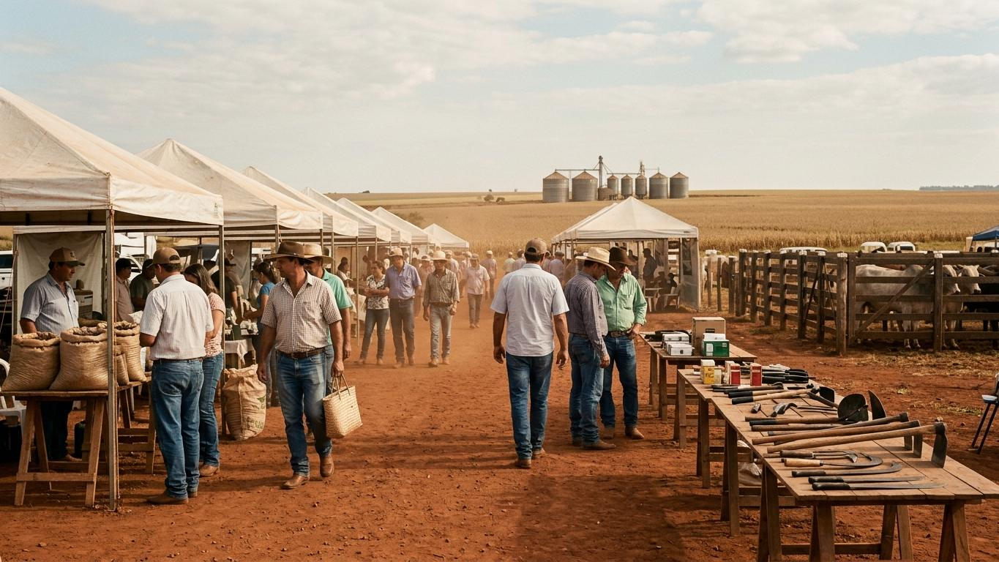
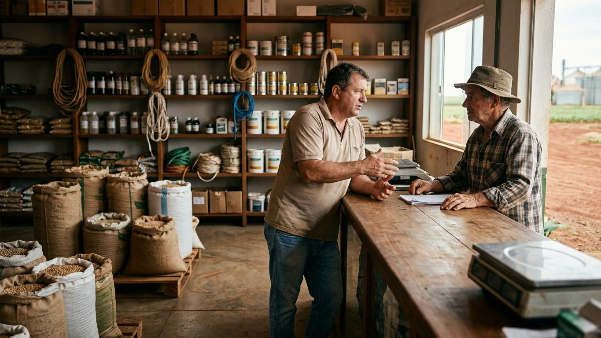

Todo slide do sistema tem 1280 por 720 e um de cinco registros. A faixa de um terço, em tinta ou em laranja, carrega o capítulo, o título descritivo, a frase central e o contador; os dois terços restantes carregam o conteúdo. Os exemplos vêm do deck padrão e do deck vivo, na gramática nova: abra o código, copie o slide inteiro e troque o texto.
Os cinco registros
A regra que escolhe: evidência é faixa de tinta à esquerda; conteúdo largo é faixa no topo; transição e recap são quieto; clímax de capítulo é faixa laranja; momento é cheio. Na dúvida entre dois, faixa à esquerda.
Faixa à esquerda
Todo slide que prova alguma coisa. A faixa ocupa um terço da largura (427 px) e o conteúdo, dois terços (853 px, 685 úteis). É o padrão: na dúvida, é este.
Capítulo 2 Diagnóstico
Onde a marca já é lembrada
A lembrança acompanha a porta, não a mídia.
07de 28
Base: 1.240 entrevistas, junho de 2026.
Código
<div class="slide s-faixa">
<div class="faixa"><div class="cap"><b>Capítulo 2</b> Diagnóstico</div><div><h2>Onde a marca já é lembrada</h2><p class="frase">A lembrança acompanha <strong>a porta,</strong> não a mídia.</p></div>
<div class="pe"><div class="contador"><b>07</b><span>de 28</span></div><div class="trilho"><span style="width:25%"></span></div></div></div>
<div class="conteudo"><div class="grafico"><svg class="cresce-x" viewBox="0 0 640 250" role="img" aria-label="Lembrança espontânea por cidade: Rio Verde 71%, Jataí 64%, Mineiros 58%, Chapadão 55%, Caiapônia 39%, Montividiu 33%."><line class="eixo" x1="150" y1="6" x2="150" y2="246"/><text x="0" y="26">Rio Verde</text><rect class="d1" x="150" y="12" width="312" height="20"/><text class="valor" x="470" y="26">71%</text><text x="0" y="66">Jataí</text><rect class="d1" x="150" y="52" width="282" height="20"/><text class="valor" x="440" y="66">64%</text><text x="0" y="106">Mineiros</text><rect class="d1" x="150" y="92" width="255" height="20"/><text class="valor" x="413" y="106">58%</text><text x="0" y="146">Chapadão</text><rect class="d1" x="150" y="132" width="242" height="20"/><text class="valor" x="400" y="146">55%</text><text x="0" y="186">Caiapônia</text><rect class="o20" x="150" y="172" width="172" height="20"/><text class="valor" x="330" y="186">39%</text><text x="0" y="226">Montividiu</text><rect class="o20" x="150" y="212" width="145" height="20"/><text class="valor" x="303" y="226">33%</text></svg></div><p class="fonte">Base: 1.240 entrevistas, junho de 2026.</p></div>
<aside class="notas">Barras por cidade. As duas em laranja são as cidades com loja da concorrente. A lembrança acompanha a porta.</aside></div>
Faixa no topo
Conteúdo largo. A faixa tem 240 px fixos, com capítulo e título à esquerda e a frase à direita; o conteúdo ganha a largura inteira. Tabela de até seis linhas a 15 px.
Capítulo 3 Públicos e plano
As fases do plano, de setembro a abril
Cada fase começa quando a anterior funciona, não quando o calendário manda.
22 de 28
setembro e outubroPré-assinaturaMapeamento, cadastro unificado, roteiro de visitas.
outubro a dezembroMapeamento e visitasSeis redações, os perfis de cidade, a linha de base da medição.
dezembro e janeiroLançamentoAs primeiras pautas e a mensagem única nas seis cidades.
janeiro a abrilAções contínuasRelacionamento mensal e a primeira medição em março.
A medição corre por baixo de tudo a partir de novembro. Datas de referência, versão 2 do plano.
Código
<div class="slide s-topo">
<div class="faixa"><div class="cabeca"><div class="cap"><b>Capítulo 3</b> Públicos e plano</div><h2>As fases do plano, de setembro a abril</h2></div><p class="frase">Cada fase começa <strong>quando a anterior funciona,</strong> não quando o calendário manda.</p>
<div class="pe"><div class="contador"><span>22 de 28</span></div><div class="trilho"><span style="width:79%"></span></div></div></div>
<div class="conteudo"><div class="fases"><div class="fase atual"><span class="quando">setembro e outubro</span><b>Pré-assinatura</b>Mapeamento, cadastro unificado, roteiro de visitas.</div><div class="fase futura"><span class="quando">outubro a dezembro</span><b>Mapeamento e visitas</b>Seis redações, os perfis de cidade, a linha de base da medição.</div><div class="fase futura"><span class="quando">dezembro e janeiro</span><b>Lançamento</b>As primeiras pautas e a mensagem única nas seis cidades.</div><div class="fase futura"><span class="quando">janeiro a abril</span><b>Ações contínuas</b>Relacionamento mensal e a primeira medição em março.</div></div><p class="fonte">A medição corre por baixo de tudo a partir de novembro. Datas de referência, versão 2 do plano.</p></div>
<aside class="notas">Fases. Cada fase começa quando a anterior funciona.</aside></div>
Quieto
Transição, lista curta, recap. Sem faixa: o cromo (capítulo, trilho vertical, contador) mora na margem de um quinto, à direita. O título a 40 px é o único peso do slide.
O que aprendemos no capítulo 2
A lembrança acompanha a porta. As duas cidades em que a marca é segunda são as duas em que a concorrente tem loja própria.
Quatro canais fazem 85% dos clientes novos. Indicação, loja, feira e rádio; o digital, que leva a maior verba, decide 12%.
Chapadão conhece e não compra. Vinte e cinco pontos entre lembrar e levar, a maior distância da rede.
Método: pesquisa de lembrança espontânea com 1.240 entrevistas e cadastro de 2.316 clientes novos.
DiagnósticoFecho do capítulo 2
11de 28
Código
<div class="slide s-quieto">
<div class="conteudo"><h2>O que aprendemos no capítulo 2</h2><ol class="recap"><li><strong>A lembrança acompanha a porta.</strong> As duas cidades em que a marca é segunda são as duas em que a concorrente tem loja própria.</li><li><strong>Quatro canais fazem 85% dos clientes novos.</strong> Indicação, loja, feira e rádio; o digital, que leva a maior verba, decide 12%.</li><li><strong>Chapadão conhece e não compra.</strong> Vinte e cinco pontos entre lembrar e levar, a maior distância da rede.</li></ol><p class="fonte">Método: pesquisa de lembrança espontânea com 1.240 entrevistas e cadastro de 2.316 clientes novos.</p></div>
<div class="cromo"><div class="capitulo">Diagnóstico<small>Fecho do capítulo 2</small></div><div class="vertical" aria-hidden="true"><span style="height:39%"></span></div><div class="contador"><b>11</b>de 28</div></div>
<aside class="notas">Recap do capítulo 2. Ler os três achados por inteiro.</aside></div>
Faixa laranja
Abertura e clímax de capítulo. A mesma faixa, no laranja da marca. Título e frase em branco; capítulo, contador e todo texto pequeno em preto. Uma por capítulo, nunca em dois slides seguidos.
Capítulo 2 de 3
Diagnóstico: onde a marca já é lembrada
Seis slides sobre o que a pesquisa mostrou em seis cidades.
03de 28
2
08Três números da pesquisa
09Onde a marca já é lembrada
10De onde vêm os clientes novos
11Seis cidades em quatro quadrantes
12A produtora de Chapadão, um aparte
13O que aprendemos no capítulo 2
Código
<div class="slide s-faixa">
<div class="faixa laranja"><div class="cap"><b>Capítulo 2</b> de 3</div><div><h2>Diagnóstico: onde a marca já é lembrada</h2><p class="frase">Seis slides sobre <strong>o que a pesquisa mostrou</strong> em seis cidades.</p></div>
<div class="pe"><div class="contador"><b>03</b><span>de 28</span></div><div class="trilho"><span style="width:11%"></span></div></div></div>
<div class="conteudo separatriz"><div class="separatriz-numeral">2</div><ol class="separatriz-lista"><li><span class="n">08</span><span>Três números da pesquisa</span></li><li><span class="n">09</span><span>Onde a marca já é lembrada</span></li><li><span class="n">10</span><span>De onde vêm os clientes novos</span></li><li><span class="n">11</span><span>Seis cidades em quatro quadrantes</span></li><li><span class="n">12</span><span>A produtora de Chapadão, um aparte</span></li><li><span class="n">13</span><span>O que aprendemos no capítulo 2</span></li></ol></div>
<aside class="notas">Separatriz do capítulo 2. Anunciar os seis slides.</aside></div>
Cheio
Momento de página inteira. Sem faixa e sem cromo: só o statement ou a citação, o rodapé com o capítulo e o contador. Escuro para aparte, foto e contracapa; laranja para a mensagem-mãe.
"A gente conhece a Casa do Campo desde criança. Só não sabia que tinha loja aqui."
Produtora de Chapadão, 41 anos, entrevista de junho de 2026. Chapadão tem a maior distância entre conhecer e comprar: 25 pontos.
Capítulo 2 Diagnóstico, aparte10 de 28
Código
<div class="slide s-cheio tema-escuro">
<div class="pilha" style="gap:40px"><p class="citacao">"A gente conhece a Casa do Campo desde criança. <strong>Só não sabia que tinha loja aqui.</strong>"</p><p class="atrib"><b>Produtora de Chapadão, 41 anos,</b> entrevista de junho de 2026. Chapadão tem a maior distância entre conhecer e comprar: 25 pontos.</p></div>
<div class="rodape-slide"><span><b>Capítulo 2</b> Diagnóstico, aparte</span><span class="tab">10 de 28</span></div>
<aside class="notas">Aparte. A fala da produtora de Chapadão explica a matriz: conhece e não sabe que tem loja.</aside></div>
Papel do slide
Registro
Quando
Evidência
Faixa de tinta, à esquerda
Todo slide que prova alguma coisa: texto, dado, tabela, pessoas, comparação, passos. Classe s-faixa.
Conteúdo largo
Faixa de tinta, no topo
Tabela de muitas colunas, cronograma, fluxo, esquema. A faixa sobe e fica com 240 px; o conteúdo ganha 1088 por 392 px úteis. Classe s-topo.
Transição e recap
Quieto, margem 80/20
Sumário, o que aprendemos no capítulo. Sem faixa: o cromo vive na margem de um quinto. Classe s-quieto.
Clímax de capítulo
Faixa laranja
A separatriz e, se houver, o slide mais importante do capítulo. Uma por capítulo, nunca em dois slides seguidos. s-faixa com faixa laranja.
Momento
Cheio, laranja ou escuro
Mensagem-mãe, aparte, foto de respiro, contracapa. Página inteira, uma vez por capítulo. s-cheio com tema-laranja ou tema-escuro.
A faixa
A faixa é a leitura do apresentador: quem vê só a faixa entende a peça. Cinco coisas moram nela, sempre na mesma ordem.
Capítulo.cap, com o número em b e o nome do capítulo. Capítulo mais rótulo até 30 caracteres. Na capa, a logo branca entra no lugar (img.logo).
Títuloh2, descritivo, até 48 caracteres: diz o que o slide contém. O achado nunca vai no título.
Frase centralp.frase, obrigatória, até 110 caracteres, com o núcleo em strong. É onde o achado mora; o apresentador lê a frase, a plateia lê o conteúdo.
Contador e trilho.pe com .contador e .trilho. O deck.js escreve os dois a partir da posição do slide; o autor pode deixar a faixa sem .pe. Na capa, a data entra em span.quando.
No registro topo.cabeca agrupa capítulo e título à esquerda; a frase vai à direita; o .pe ocupa a largura toda na base dos 240 px.
Capítulo 2 Diagnóstico
Onde a marca já é lembrada
A lembrança acompanha a porta, não a mídia.
09de 28
Base: 1.240 entrevistas, junho de 2026.
Faixa de tinta. O padrão de todo slide de conteúdo.
Capítulo 2 Diagnóstico
Onde a marca já é lembrada
A lembrança acompanha a porta, não a mídia.
09de 28
Base: 1.240 entrevistas, junho de 2026.
Faixa laranja. Abertura e clímax, uma por capítulo. O texto pequeno é preto; o trilho é branco.
A faixa laranja é um momento e conta no teto: uma por capítulo, nunca em dois slides seguidos. Título e frase sobem para o branco (a frase vai a 24 px, o mínimo do branco sobre laranja); capítulo, contador e trilho ficam em preto, porque branco a 15 px sobre laranja fica em 3,5:1. A camada resolve isso pela classe laranja; nada a sobrescrever.
Código
<div class="faixa"><div class="cap"><b>Capítulo 2</b> Diagnóstico</div><div><h2>Onde a marca já é lembrada</h2><p class="frase">A lembrança acompanha <strong>a porta,</strong> não a mídia.</p></div>
<div class="pe"><div class="contador"><b>09</b><span>de 28</span></div><div class="trilho"><span style="width:32%"></span></div></div></div>
<div class="faixa laranja"><div class="cap"><b>Capítulo 2</b> Diagnóstico</div><div><h2>Onde a marca já é lembrada</h2><p class="frase">A lembrança acompanha <strong>a porta,</strong> não a mídia.</p></div>
<div class="pe"><div class="contador"><b>09</b><span>de 28</span></div><div class="trilho"><span style="width:32%"></span></div></div></div>
<div class="faixa"><div class="cabeca"><div class="cap"><b>Capítulo 3</b> Públicos e plano</div><h2>As fases do plano, de setembro a abril</h2></div><p class="frase">Cada fase começa <strong>quando a anterior funciona,</strong> não quando o calendário manda.</p>
<div class="pe"><div class="contador"><span>22 de 28</span></div><div class="trilho"><span style="width:79%"></span></div></div></div>
Os tipos de slide
Vinte e oito tipos, um exemplo de cada, na ordem em que costumam aparecer numa peça. Cada um traz o registro certo, os limites de texto respeitados e a nota do apresentador em aside.notas.
A numeração e o trilho seguem a ordem deste catálogo e estão escritos à mão em cada exemplo (.pe na faixa, .vertical e .contador no cromo, span.tab no cheio). No deck, o deck.js escreve os três a partir da posição de cada slide; o autor não numera nada. Os caminhos de imagem apontam para ../assets/; no template do deck, troque por ../../../assets/.
Capa
Faixa laranja, foto nos dois terços. A logo no alto da faixa, a data no contador, a legenda em papel no canto da foto. Capa descritiva: o que é, para quem, quando. Nenhum achado. O último termo do título em em, a assinatura da marca.
Plano de presença de marca no Cerrado
Plataforma de comunicação para a Casa do Campo: diagnóstico, públicos, mensagem e cronograma de entrada.
Julho de 202601 de 28
Rio Verde, a loja do centro. Imagem ilustrativa gerada para o exemplo.
Código
<div class="slide s-faixa">
<div class="faixa laranja"><div class="cap"><img class="logo" src="../assets/logos/logo-8020-branco.svg" alt="80 20"></div><div><h2>Plano de presença de marca no <em>Cerrado</em></h2><p class="frase">Plataforma de comunicação para a <strong>Casa do Campo</strong>: diagnóstico, públicos, mensagem e cronograma de entrada.</p></div>
<div class="pe"><div class="contador"><span class="quando">Julho de 2026</span><span>01 de 28</span></div><div class="trilho"><span style="width:4%"></span></div></div></div>
<div class="foto-area"><img src="../assets/imagens/fachada-rio-verde.jpg" alt="Fachada da loja de insumos, caminhonetes na porta, um produtor entrando"><span>Rio Verde, a loja do centro. Imagem ilustrativa gerada para o exemplo.</span></div>
<aside class="notas">Capa descritiva. Diga para quem é e quando, e o que a peça contém. O achado não abre o deck.</aside></div>
Sumário
Quieto. Um item por capítulo com a página de abertura, número em peso 300, página em meta. Nome funcional exato: Sumário.
Sumário
1Leitura do desafio03
2Diagnóstico: onde a marca já é lembrada07
3Públicos, mensagem e cronograma14
SumárioTrês capítulos
02de 28
Código
<div class="slide s-quieto">
<div class="conteudo"><h2>Sumário</h2><ol class="sumario-slide"><li><span class="n">1</span><span>Leitura do desafio</span><span class="pg">03</span></li><li><span class="n">2</span><span>Diagnóstico: onde a marca já é lembrada</span><span class="pg">07</span></li><li><span class="n">3</span><span>Públicos, mensagem e cronograma</span><span class="pg">14</span></li></ol></div>
<div class="cromo"><div class="capitulo">Sumário<small>Três capítulos</small></div><div class="vertical" aria-hidden="true"><span style="height:7%"></span></div><div class="contador"><b>02</b>de 28</div></div>
<aside class="notas">Sumário. Três capítulos; diga que o diagnóstico é o coração e que o cronograma fecha.</aside></div>
Separatriz
Faixa laranja. O numeral a 260 px em peso 300 e a lista dos slides do capítulo com os números. A única faixa laranja do capítulo. A frase diz quantos slides e sobre o quê.
Capítulo 2 de 3
Diagnóstico: onde a marca já é lembrada
Seis slides sobre o que a pesquisa mostrou em seis cidades.
03de 28
2
08Três números da pesquisa
09Onde a marca já é lembrada
10De onde vêm os clientes novos
11Seis cidades em quatro quadrantes
12A produtora de Chapadão, um aparte
13O que aprendemos no capítulo 2
Código
<div class="slide s-faixa">
<div class="faixa laranja"><div class="cap"><b>Capítulo 2</b> de 3</div><div><h2>Diagnóstico: onde a marca já é lembrada</h2><p class="frase">Seis slides sobre <strong>o que a pesquisa mostrou</strong> em seis cidades.</p></div>
<div class="pe"><div class="contador"><b>03</b><span>de 28</span></div><div class="trilho"><span style="width:11%"></span></div></div></div>
<div class="conteudo separatriz"><div class="separatriz-numeral">2</div><ol class="separatriz-lista"><li><span class="n">08</span><span>Três números da pesquisa</span></li><li><span class="n">09</span><span>Onde a marca já é lembrada</span></li><li><span class="n">10</span><span>De onde vêm os clientes novos</span></li><li><span class="n">11</span><span>Seis cidades em quatro quadrantes</span></li><li><span class="n">12</span><span>A produtora de Chapadão, um aparte</span></li><li><span class="n">13</span><span>O que aprendemos no capítulo 2</span></li></ol></div>
<aside class="notas">Separatriz do capítulo 2. Anunciar os seis slides.</aside></div>
Texto em duas colunas
Faixa à esquerda. O argumento por extenso, em duas colunas de 19 px com medida de 40 caracteres. A frase da faixa é o resumo; a fonte fecha o slide.
Capítulo 1 Leitura do desafio
A empresa que chega ao Cerrado
Uma rede conhecida na praça, sem sistema próprio de presença.
04de 28
A Casa do Campo tem doze lojas em seis cidades e quarenta anos de porta aberta. É lembrada onde está há mais tempo e desconhecida a cinquenta quilômetros de qualquer loja. A comunicação até hoje foi feita loja a loja: a rádio local, o patrocínio da festa, o cartaz na feira.
Nada disso está errado. O que falta é o sistema: uma mensagem que valha para as seis cidades, um calendário que não dependa do gerente de cada loja e um jeito de medir se a marca está sendo lembrada por quem ainda não comprou.
O plano trata dessas três faltas, nesta ordem. Antes, o diagnóstico mostra o que a pesquisa de junho encontrou em cada cidade.
Fontes: entrevistas com a diretoria e os seis gerentes, maio de 2026.
Código
<div class="slide s-faixa">
<div class="faixa"><div class="cap"><b>Capítulo 1</b> Leitura do desafio</div><div><h2>A empresa que chega ao Cerrado</h2><p class="frase">Uma rede conhecida na praça, <strong>sem sistema próprio</strong> de presença.</p></div>
<div class="pe"><div class="contador"><b>04</b><span>de 28</span></div><div class="trilho"><span style="width:14%"></span></div></div></div>
<div class="conteudo"><div class="duas-colunas"><p>A Casa do Campo tem doze lojas em seis cidades e quarenta anos de porta aberta. É lembrada onde está há mais tempo e desconhecida a cinquenta quilômetros de qualquer loja. A comunicação até hoje foi feita loja a loja: a rádio local, o patrocínio da festa, o cartaz na feira.</p><p>Nada disso está errado. O que falta é o sistema: uma mensagem que valha para as seis cidades, um calendário que não dependa do gerente de cada loja e um jeito de medir se a marca está sendo lembrada por quem ainda não comprou.</p><p>O plano trata dessas três faltas, nesta ordem. Antes, o diagnóstico mostra o que a pesquisa de junho encontrou em cada cidade.</p></div><p class="fonte">Fontes: entrevistas com a diretoria e os seis gerentes, maio de 2026.</p></div>
<aside class="notas">A empresa. Doze lojas, seis cidades, quarenta anos. A comunicação foi feita loja a loja; o que falta é o sistema.</aside></div>
Comparação
Faixa à esquerda. Hoje e com o plano, lado a lado. O lado de hoje usa o quadrado em contorno; o do plano, o quadrado laranja. O filete de tinta no topo de cada coluna é a única moldura.
Capítulo 1 Leitura do desafio
O que muda na comunicação da rede
De seis comunicações locais para uma presença de rede.
05de 28
Hoje
Cada gerente decide a mídia da sua loja
Rádio local e patrocínio de festa
Sem cadastro único de clientes
Medição pela venda do mês
Mensagem diferente em cada cidade
Com o plano
Um calendário para as seis cidades
Imprensa regional e perfis de cidade
Base única, com linha de base em novembro
Medição de lembrança duas vezes por ano
Uma mensagem, adaptada por loja
Síntese das entrevistas de maio e do diagnóstico de junho.
Código
<div class="slide s-faixa">
<div class="faixa"><div class="cap"><b>Capítulo 1</b> Leitura do desafio</div><div><h2>O que muda na comunicação da rede</h2><p class="frase">De seis comunicações locais para <strong>uma presença de rede.</strong></p></div>
<div class="pe"><div class="contador"><b>05</b><span>de 28</span></div><div class="trilho"><span style="width:18%"></span></div></div></div>
<div class="conteudo"><div class="comparacao"><div class="hoje"><h4>Hoje</h4><ul><li>Cada gerente decide a mídia da sua loja</li><li>Rádio local e patrocínio de festa</li><li>Sem cadastro único de clientes</li><li>Medição pela venda do mês</li><li>Mensagem diferente em cada cidade</li></ul></div><div class="depois"><h4>Com o plano</h4><ul><li>Um calendário para as seis cidades</li><li>Imprensa regional e perfis de cidade</li><li>Base única, com linha de base em novembro</li><li>Medição de lembrança duas vezes por ano</li><li>Uma mensagem, adaptada por loja</li></ul></div></div><p class="fonte">Síntese das entrevistas de maio e do diagnóstico de junho.</p></div>
<aside class="notas">O que muda. Hoje contra com o plano. Não é crítica ao que foi feito: é o sistema que faltava.</aside></div>
Números em linha
Faixa à esquerda. Até três números, cada um dentro da frase que o nomeia, com a faísca ao lado quando há série. O número e a frase são um par; nunca um bloco de destaque solto.
Capítulo 2 Diagnóstico
Três números da pesquisa
A marca é lembrada, menos comprada, e cresce onde abriu loja.
06de 28
71% de lembrança espontânea em Rio Verde, a maior das seis cidades e 19 pontos acima de 2020.
25 pontos entre conhecer e comprar em Chapadão, a maior distância da rede.
+24 pontos em Jataí desde 2023, o ano da loja nova no meio.
Pesquisa de junho de 2026, 1.240 entrevistas.
Código
<div class="slide s-faixa">
<div class="faixa"><div class="cap"><b>Capítulo 2</b> Diagnóstico</div><div><h2>Três números da pesquisa</h2><p class="frase">A marca é lembrada, <strong>menos comprada,</strong> e cresce onde abriu loja.</p></div>
<div class="pe"><div class="contador"><b>06</b><span>de 28</span></div><div class="trilho"><span style="width:21%"></span></div></div></div>
<div class="conteudo"><div class="numeros"><p><strong>71%</strong> de lembrança espontânea em Rio Verde, <svg viewBox="0 0 88 24" aria-hidden="true"><polyline points="4,20 17,17 30,14 43,12 56,9 69,5 82,3"/><circle cx="82" cy="3" r="3"/></svg> a maior das seis cidades e 19 pontos acima de 2020.</p><p><strong>25 pontos</strong> entre conhecer e comprar em Chapadão, a maior distância da rede.</p><p><strong>+24 pontos</strong> em Jataí desde 2023, <svg viewBox="0 0 88 24" aria-hidden="true"><polyline points="4,20 30,16 56,8 82,3"/><circle cx="82" cy="3" r="3"/></svg> o ano da loja nova no meio.</p></div><p class="fonte">Pesquisa de junho de 2026, 1.240 entrevistas.</p></div>
<aside class="notas">Três números. Lembrada, menos comprada, cresce onde abriu loja. Os três voltam nos slides seguintes.</aside></div>
Barras com ênfase
Faixa à esquerda. Barras horizontais em SVG, eixo único, rótulo direto, o 20 em laranja. A frase da faixa é a leitura do gráfico. svg.cresce-x liga a coreografia de entrada.
Capítulo 2 Diagnóstico
Onde a marca já é lembrada
A lembrança acompanha a porta, não a mídia.
07de 28
Base: 1.240 entrevistas, junho de 2026.
Código
<div class="slide s-faixa">
<div class="faixa"><div class="cap"><b>Capítulo 2</b> Diagnóstico</div><div><h2>Onde a marca já é lembrada</h2><p class="frase">A lembrança acompanha <strong>a porta,</strong> não a mídia.</p></div>
<div class="pe"><div class="contador"><b>07</b><span>de 28</span></div><div class="trilho"><span style="width:25%"></span></div></div></div>
<div class="conteudo"><div class="grafico"><svg class="cresce-x" viewBox="0 0 640 250" role="img" aria-label="Lembrança espontânea por cidade: Rio Verde 71%, Jataí 64%, Mineiros 58%, Chapadão 55%, Caiapônia 39%, Montividiu 33%."><line class="eixo" x1="150" y1="6" x2="150" y2="246"/><text x="0" y="26">Rio Verde</text><rect class="d1" x="150" y="12" width="312" height="20"/><text class="valor" x="470" y="26">71%</text><text x="0" y="66">Jataí</text><rect class="d1" x="150" y="52" width="282" height="20"/><text class="valor" x="440" y="66">64%</text><text x="0" y="106">Mineiros</text><rect class="d1" x="150" y="92" width="255" height="20"/><text class="valor" x="413" y="106">58%</text><text x="0" y="146">Chapadão</text><rect class="d1" x="150" y="132" width="242" height="20"/><text class="valor" x="400" y="146">55%</text><text x="0" y="186">Caiapônia</text><rect class="o20" x="150" y="172" width="172" height="20"/><text class="valor" x="330" y="186">39%</text><text x="0" y="226">Montividiu</text><rect class="o20" x="150" y="212" width="145" height="20"/><text class="valor" x="303" y="226">33%</text></svg></div><p class="fonte">Base: 1.240 entrevistas, junho de 2026.</p></div>
<aside class="notas">Barras por cidade. As duas em laranja são as cidades com loja da concorrente. A lembrança acompanha a porta.</aside></div>
Pareto
Faixa à esquerda. O gráfico-assinatura: participação e acumulado na mesma escala, a linha de 80% em laranja, o ponto que cruza. Os dois rótulos das barras altas vão dentro da barra, em papel. svg.cresce-y.
Capítulo 2 Diagnóstico
De onde vêm os clientes novos
Quatro canais respondem por 85% dos clientes novos.
08de 28
Cadastro de 2.316 clientes novos nos doze meses até junho de 2026. Participação e acumulado na mesma escala.
Faixa à esquerda. Cortes nas medianas, não em números redondos. Rótulo ao lado do ponto, para o lado de fora da mediana; o 20 em laranja. Detalhe em diagramas.html.
Capítulo 2 Diagnóstico
Seis cidades em quatro quadrantes
Só Chapadão lembra e não compra.
09de 28
Pesquisa de junho de 2026. Cortes em 50% de lembrança e 33% de compra, as medianas das seis cidades.
Código
<div class="slide s-faixa">
<div class="faixa"><div class="cap"><b>Capítulo 2</b> Diagnóstico</div><div><h2>Seis cidades em quatro quadrantes</h2><p class="frase">Só Chapadão <strong>lembra e não compra.</strong></p></div>
<div class="pe"><div class="contador"><b>09</b><span>de 28</span></div><div class="trilho"><span style="width:32%"></span></div></div></div>
<div class="conteudo"><div class="grafico matriz"><svg viewBox="-12 0 668 430" role="img" aria-label="Matriz de lembrança e compra por cidade: Rio Verde, Jataí e Mineiros lembram e compram; Chapadão lembra e não compra; Caiapônia e Montividiu nem lembram nem compram."><title>Lembrança e compra por cidade</title>
<line class="eixo" x1="114" y1="380" x2="600" y2="380"/><line class="eixo" x1="114" y1="20" x2="114" y2="380"/>
<line x1="418" y1="20" x2="418" y2="380" stroke="var(--rule-strong)"/><line x1="114" y1="182" x2="600" y2="182" stroke="var(--rule-strong)"/>
<text x="428" y="38" class="tique">lembra e compra</text><text x="428" y="372" class="tique">lembra e não compra</text><text x="124" y="372" class="tique">nem lembra nem compra</text><text x="124" y="38" class="tique">compra sem lembrar</text>
<text x="418" y="402" class="tique" text-anchor="middle">50% de lembrança</text><text x="108" y="186" class="tique" text-anchor="end">33% de compra</text><text x="600" y="424" class="tique" text-anchor="end">lembrança espontânea</text><text x="114" y="14" class="tique">compra em 12 meses</text>
<circle cx="545.5" cy="92" r="6" fill="var(--dado-1)" stroke="var(--paper)" stroke-width="2"/><text x="557.5" y="96" class="valor">Rio Verde</text>
<circle cx="503" cy="134" r="6" fill="var(--dado-1)" stroke="var(--paper)" stroke-width="2"/><text x="515" y="138" class="valor">Jataí</text>
<circle cx="466" cy="170" r="6" fill="var(--dado-1)" stroke="var(--paper)" stroke-width="2"/><text x="478" y="166" class="valor">Mineiros</text>
<circle cx="448" cy="200" r="7" fill="var(--accent)" stroke="var(--paper)" stroke-width="2"/><text x="461" y="212" class="valor">Chapadão</text>
<circle cx="351" cy="272" r="6" fill="var(--dado-3)" stroke="var(--paper)" stroke-width="2"/><text x="339" y="276" class="valor" text-anchor="end">Caiapônia</text>
<circle cx="314.5" cy="308" r="6" fill="var(--dado-3)" stroke="var(--paper)" stroke-width="2"/><text x="302.5" y="312" class="valor" text-anchor="end">Montividiu</text>
</svg></div><p class="fonte">Pesquisa de junho de 2026. Cortes em 50% de lembrança e 33% de compra, as medianas das seis cidades.</p></div>
<aside class="notas">Matriz dois por dois: os cortes são as medianas, não números redondos escolhidos. Chapadão é a única cidade acima da mediana de lembrança e abaixo da de compra; é a loja que a cidade conhece e não visita.</aside></div>
Aparte
Cheio, momento escuro. A fala a 44 px em peso 300 com o núcleo em 700, e o dado que a sustenta logo abaixo, com quem disse e quando. Uma vez por capítulo.
"A gente conhece a Casa do Campo desde criança. Só não sabia que tinha loja aqui."
Produtora de Chapadão, 41 anos, entrevista de junho de 2026. Chapadão tem a maior distância entre conhecer e comprar: 25 pontos.
Capítulo 2 Diagnóstico, aparte10 de 28
Código
<div class="slide s-cheio tema-escuro">
<div class="pilha" style="gap:40px"><p class="citacao">"A gente conhece a Casa do Campo desde criança. <strong>Só não sabia que tinha loja aqui.</strong>"</p><p class="atrib"><b>Produtora de Chapadão, 41 anos,</b> entrevista de junho de 2026. Chapadão tem a maior distância entre conhecer e comprar: 25 pontos.</p></div>
<div class="rodape-slide"><span><b>Capítulo 2</b> Diagnóstico, aparte</span><span class="tab">10 de 28</span></div>
<aside class="notas">Aparte. A fala da produtora de Chapadão explica a matriz: conhece e não sabe que tem loja.</aside></div>
Recap
Quieto. Cada aprendizado escrito por inteiro, compreensível se lido sozinho, e a fonte do método junto. Fecha todo capítulo; o cromo diz de qual.
O que aprendemos no capítulo 2
A lembrança acompanha a porta. As duas cidades em que a marca é segunda são as duas em que a concorrente tem loja própria.
Quatro canais fazem 85% dos clientes novos. Indicação, loja, feira e rádio; o digital, que leva a maior verba, decide 12%.
Chapadão conhece e não compra. Vinte e cinco pontos entre lembrar e levar, a maior distância da rede.
Método: pesquisa de lembrança espontânea com 1.240 entrevistas e cadastro de 2.316 clientes novos.
DiagnósticoFecho do capítulo 2
11de 28
Código
<div class="slide s-quieto">
<div class="conteudo"><h2>O que aprendemos no capítulo 2</h2><ol class="recap"><li><strong>A lembrança acompanha a porta.</strong> As duas cidades em que a marca é segunda são as duas em que a concorrente tem loja própria.</li><li><strong>Quatro canais fazem 85% dos clientes novos.</strong> Indicação, loja, feira e rádio; o digital, que leva a maior verba, decide 12%.</li><li><strong>Chapadão conhece e não compra.</strong> Vinte e cinco pontos entre lembrar e levar, a maior distância da rede.</li></ol><p class="fonte">Método: pesquisa de lembrança espontânea com 1.240 entrevistas e cadastro de 2.316 clientes novos.</p></div>
<div class="cromo"><div class="capitulo">Diagnóstico<small>Fecho do capítulo 2</small></div><div class="vertical" aria-hidden="true"><span style="height:39%"></span></div><div class="contador"><b>11</b>de 28</div></div>
<aside class="notas">Recap do capítulo 2. Ler os três achados por inteiro.</aside></div>
Mensagem-mãe
Cheio, momento laranja. O statement a 64 px em peso 300 com o núcleo em 800. Uma vez na peça, cercado de slides claros. O rodapé diz o capítulo e o contador.
A lembrança acompanha a porta, não a mídia.
Capítulo 3 Públicos e plano, mensagem-mãe12 de 28
Código
<div class="slide s-cheio tema-laranja">
<p class="statement">A lembrança acompanha <strong>a porta,</strong> não a mídia.</p>
<div class="rodape-slide"><span><b>Capítulo 3</b> Públicos e plano, mensagem-mãe</span><span class="tab">12 de 28</span></div>
<aside class="notas">Mensagem-mãe. Deixar o slide no ar por alguns segundos antes de falar.</aside></div>
Perfis
Faixa à esquerda. Seis pessoas por slide, retrato quadrado de 72 px com borda fina, cortado ao centro do 4 por 5. Nome em 600, cidade e alcance em meta, uma linha sobre o que a pessoa faz. Nomes fictícios e retratos gerados vão ditos na fonte.
Capítulo 3 Públicos e plano
Perfis de cidade e cotidiano
Quem fala da vida local já fala das lojas sem que ninguém peça.
13de 28
Marta SiqueiraRio Verde, 48 mil seguidoresCobre feira, festa e comércio; já citou a loja do centro três vezes.
Tiago BrandãoJataí, 31 milVídeos curtos sobre a rotina da cidade; público de 25 a 45 anos.
Lúcia FerrazMineiros, 19 milReceitas e horta; fala de insumo como quem fala de cozinha.
Rádio CaiapóCaiapônia, programa da manhãO único veículo com audiência medida na cidade.
Élio NascimentoChapadão, 22 milCobre o agronegócio local com tom de vizinho.
Portal Montividiu HojeMontividiu, 9 mil leitores por mêsPublica tudo o que a prefeitura e o comércio mandam.
Levantamento de agosto de 2026. Nomes fictícios.
Código
<div class="slide s-faixa">
<div class="faixa"><div class="cap"><b>Capítulo 3</b> Públicos e plano</div><div><h2>Perfis de cidade e cotidiano</h2><p class="frase">Quem fala da vida local <strong>já fala das lojas</strong> sem que ninguém peça.</p></div>
<div class="pe"><div class="contador"><b>13</b><span>de 28</span></div><div class="trilho"><span style="width:46%"></span></div></div></div>
<div class="conteudo"><div class="perfis"><div class="perfil"><div class="foto"><img src="../assets/imagens/retrato-marta-min.jpg" alt=""></div><div><b>Marta Siqueira</b><span class="papel">Rio Verde, 48 mil seguidores</span>Cobre feira, festa e comércio; já citou a loja do centro três vezes.</div></div><div class="perfil"><div class="foto"><img src="../assets/imagens/retrato-tiago-min.jpg" alt=""></div><div><b>Tiago Brandão</b><span class="papel">Jataí, 31 mil</span>Vídeos curtos sobre a rotina da cidade; público de 25 a 45 anos.</div></div><div class="perfil"><div class="foto"><img src="../assets/imagens/retrato-lucia-min.jpg" alt=""></div><div><b>Lúcia Ferraz</b><span class="papel">Mineiros, 19 mil</span>Receitas e horta; fala de insumo como quem fala de cozinha.</div></div><div class="perfil"><div class="foto"><img src="../assets/imagens/retrato-radio-min.jpg" alt=""></div><div><b>Rádio Caiapó</b><span class="papel">Caiapônia, programa da manhã</span>O único veículo com audiência medida na cidade.</div></div><div class="perfil"><div class="foto"><img src="../assets/imagens/retrato-elio-min.jpg" alt=""></div><div><b>Élio Nascimento</b><span class="papel">Chapadão, 22 mil</span>Cobre o agronegócio local com tom de vizinho.</div></div><div class="perfil"><div class="foto"><img src="../assets/imagens/retrato-portal-min.jpg" alt=""></div><div><b>Portal Montividiu Hoje</b><span class="papel">Montividiu, 9 mil leitores por mês</span>Publica tudo o que a prefeitura e o comércio mandam.</div></div></div><p class="fonte">Levantamento de agosto de 2026. Nomes fictícios.</p></div>
<aside class="notas">Perfis. Seis pessoas que já falam da cidade. Nenhuma tem contrato; nenhuma vai ter.</aside></div>
Mapa de atores
Faixa à esquerda. Três anéis retangulares em volta do centro; o quadrado de 8 px é o nó; o quadrado laranja marca o ator que o plano ativa primeiro. Diagrama em ângulo reto. Detalhe em diagramas.html.
Capítulo 3 Públicos e plano
Quem decide, quem influencia, quem observa
Quem influencia já fala da loja; quem decide ainda não ouviu.
14de 28
Anéis por proximidade da decisão de compra. O quadrado laranja marca o ator que o plano ativa primeiro.
Código
<div class="slide s-faixa">
<div class="faixa"><div class="cap"><b>Capítulo 3</b> Públicos e plano</div><div><h2>Quem decide, quem influencia, quem observa</h2><p class="frase">Quem influencia <strong>já fala da loja;</strong> quem decide ainda não ouviu.</p></div>
<div class="pe"><div class="contador"><b>14</b><span>de 28</span></div><div class="trilho"><span style="width:50%"></span></div></div></div>
<div class="conteudo"><div class="grafico atores-mapa"><svg viewBox="0 0 640 430" role="img" aria-label="Mapa de atores em três anéis em volta da loja. Decide: vendedora, gerente, produtor, técnico de campo. Influencia: rádio da manhã, feira regional, perfis de cidade, sindicato rural. Observa: concorrente, portal e jornal, prefeitura."><title>Mapa de atores em volta da loja</title>
<rect x="8" y="8" width="624" height="414" fill="none" stroke="var(--rule-strong)"/><text x="20" y="30" class="tique">observa</text>
<rect x="100" y="72" width="440" height="286" fill="none" stroke="var(--rule-strong)"/><text x="112" y="94" class="tique">influencia</text>
<rect x="148" y="136" width="344" height="158" fill="none" stroke="var(--ink)"/><text x="160" y="158" class="tique">decide</text>
<rect x="280" y="188" width="80" height="54" fill="var(--ink)"/><text x="320" y="220" text-anchor="middle" style="fill:var(--paper);font-weight:600;font-size:15px">A loja</text>
<rect x="160" y="172" width="8" height="8" fill="var(--ink)"/><text x="174" y="180" class="rotulo">Vendedora</text>
<rect x="472" y="172" width="8" height="8" fill="var(--ink)"/><text x="466" y="180" class="rotulo" text-anchor="end">Produtor</text>
<rect x="160" y="272" width="8" height="8" fill="var(--ink)"/><text x="174" y="280" class="rotulo">Gerente da loja</text>
<rect x="472" y="272" width="8" height="8" fill="var(--ink)"/><text x="466" y="280" class="rotulo" text-anchor="end">Técnico de campo</text>
<rect x="112" y="114" width="8" height="8" fill="var(--dado-3)"/><text x="126" y="122" class="rotulo">Rádio da manhã</text>
<rect x="520" y="114" width="8" height="8" fill="var(--dado-3)"/><text x="514" y="122" class="rotulo" text-anchor="end">Feira regional</text>
<rect x="112" y="322" width="8" height="8" fill="var(--accent)"/><text x="126" y="330" class="rotulo">Perfis de cidade</text>
<rect x="520" y="322" width="8" height="8" fill="var(--dado-3)"/><text x="514" y="330" class="rotulo" text-anchor="end">Sindicato rural</text>
<rect x="20" y="394" width="8" height="8" fill="none" stroke="var(--ink)"/><text x="34" y="402" class="rotulo">Portal e jornal</text>
<rect x="612" y="394" width="8" height="8" fill="none" stroke="var(--ink)"/><text x="606" y="402" class="rotulo" text-anchor="end">Prefeitura</text>
<rect x="612" y="46" width="8" height="8" fill="none" stroke="var(--ink)"/><text x="606" y="54" class="rotulo" text-anchor="end">Concorrente</text>
</svg></div><p class="fonte">Anéis por proximidade da decisão de compra. O quadrado laranja marca o ator que o plano ativa primeiro.</p></div>
<aside class="notas">Mapa concêntrico em ângulo reto, como todo diagrama do sistema. O anel de dentro é quem está no balcão; o do meio é quem a cidade ouve; o de fora observa e reage. Os perfis de cidade já citam a loja sem pedir; por isso começam.</aside></div>
Veículos em três colunas
Faixa à esquerda. Três colunas com cabeçalho em meta sobre filete de tinta; nome na linha, cidade em meta abaixo, para nenhum nome quebrar ao lado da cidade. Sem logo de veículo.
Capítulo 3 Públicos e plano
Veículos das seis cidades
Dezoito veículos, seis que decidem o que a região lê e ouve.
15de 28
Portais e jornais
Portal SudoesteRio Verde
Jornal do SudoesteJataí
Montividiu HojeMontividiu
Folha de MineirosMineiros
Chapadão NotíciasChapadão
Caiapônia em DiaCaiapônia
Rádio
Rádio CidadeRio Verde
Mineiros FMMineiros
Rádio CaiapóCaiapônia
Jataí AMJataí
Chapadão FMChapadão
Montividiu FMMontividiu
Televisão
TV Sudoeste, afiliadaRio Verde
TV Jataí, retransmissoraJataí
Programa Terra Boaregional
Jornal do Camporegional
Telejornal da noiteRio Verde
Minuto Ruralregional
Os seis que decidem estão na agenda de visitas às redações.
Código
<div class="slide s-faixa">
<div class="faixa"><div class="cap"><b>Capítulo 3</b> Públicos e plano</div><div><h2>Veículos das seis cidades</h2><p class="frase">Dezoito veículos, <strong>seis que decidem</strong> o que a região lê e ouve.</p></div>
<div class="pe"><div class="contador"><b>15</b><span>de 28</span></div><div class="trilho"><span style="width:54%"></span></div></div></div>
<div class="conteudo"><div class="atores"><div><h4>Portais e jornais</h4><ul><li>Portal Sudoeste<span>Rio Verde</span></li><li>Jornal do Sudoeste<span>Jataí</span></li><li>Montividiu Hoje<span>Montividiu</span></li><li>Folha de Mineiros<span>Mineiros</span></li><li>Chapadão Notícias<span>Chapadão</span></li><li>Caiapônia em Dia<span>Caiapônia</span></li></ul></div><div><h4>Rádio</h4><ul><li>Rádio Cidade<span>Rio Verde</span></li><li>Mineiros FM<span>Mineiros</span></li><li>Rádio Caiapó<span>Caiapônia</span></li><li>Jataí AM<span>Jataí</span></li><li>Chapadão FM<span>Chapadão</span></li><li>Montividiu FM<span>Montividiu</span></li></ul></div><div><h4>Televisão</h4><ul><li>TV Sudoeste, afiliada<span>Rio Verde</span></li><li>TV Jataí, retransmissora<span>Jataí</span></li><li>Programa Terra Boa<span>regional</span></li><li>Jornal do Campo<span>regional</span></li><li>Telejornal da noite<span>Rio Verde</span></li><li>Minuto Rural<span>regional</span></li></ul></div></div><p class="fonte">Os seis que decidem estão na agenda de visitas às redações.</p></div>
<aside class="notas">Veículos. Dezoito, dos quais seis decidem. A agenda de visitas é para esses seis.</aside></div>
Lista-razão
Faixa à esquerda. Número em 300, título em 600, uma linha de explicação. Quando a lista é uma sequência, o número informa e fica; quando não é, a lista usa o quadrado.
Capítulo 3 Públicos e plano
O que roda antes da assinatura
Quatro frentes começam sem esperar o contrato.
16de 28
1
Mapeamento dos veículos das seis cidadesPortais, jornais, rádios e televisão regional, com contato e pauta preferida de cada um.
2
Perfis de cidade e cotidianoOs influenciadores que falam da vida local, não de agronegócio.
3
Cadastro unificado das lojasUma base só de clientes, para a medição ter linha de base.
4
Roteiro de visita às redaçõesUma visita por cidade, com o gerente da loja junto.
Código
<div class="slide s-faixa">
<div class="faixa"><div class="cap"><b>Capítulo 3</b> Públicos e plano</div><div><h2>O que roda antes da assinatura</h2><p class="frase">Quatro frentes começam <strong>sem esperar o contrato.</strong></p></div>
<div class="pe"><div class="contador"><b>16</b><span>de 28</span></div><div class="trilho"><span style="width:57%"></span></div></div></div>
<div class="conteudo"><ol class="lista-razao"><li><span class="n">1</span><div><b>Mapeamento dos veículos das seis cidades</b><span>Portais, jornais, rádios e televisão regional, com contato e pauta preferida de cada um.</span></div></li><li><span class="n">2</span><div><b>Perfis de cidade e cotidiano</b><span>Os influenciadores que falam da vida local, não de agronegócio.</span></div></li><li><span class="n">3</span><div><b>Cadastro unificado das lojas</b><span>Uma base só de clientes, para a medição ter linha de base.</span></div></li><li><span class="n">4</span><div><b>Roteiro de visita às redações</b><span>Uma visita por cidade, com o gerente da loja junto.</span></div></li></ol></div>
<aside class="notas">Antes da assinatura. Quatro frentes que não esperam contrato.</aside></div>
Tabela no topo (agenda)
Faixa no topo. Seis colunas não cabem em dois terços. Tabela a 15 px, até seis linhas, com a largura das colunas escrita; a coluna numérica e o estado nunca quebram. O estado usa o quadrado; a linha em o20 é a de atenção.
Capítulo 3 Públicos e plano
Agenda de visitas às redações
Seis visitas em cinco semanas, com o gerente da loja junto em todas.
17 de 28
Cidade
Veículo
Quem recebe
Pauta de entrada
Semana
Estado
Rio Verde
Portal Sudoeste e rádio Cidade
Editor-chefe e âncora da manhã
Quarenta anos de porta aberta
1
Agendada
Jataí
Jornal do Sudoeste
Editora de economia
A loja nova e os empregos
2
Agendada
Mineiros
Rádio Mineiros FM
Diretor de programação
Calendário de plantio
2
A confirmar
Chapadão
TV Sudoeste, afiliada
Chefe de reportagem
A feira de novembro
3
A confirmar
Caiapônia
Rádio Caiapó
Proprietário
Por que a marca voltou à cidade
4
Sem contato
Montividiu
Portal Montividiu Hoje
Editor
A safra e o crédito
5
A confirmar
Código
<div class="slide s-topo">
<div class="faixa"><div class="cabeca"><div class="cap"><b>Capítulo 3</b> Públicos e plano</div><h2>Agenda de visitas às redações</h2></div><p class="frase">Seis visitas em cinco semanas, <strong>com o gerente da loja junto</strong> em todas.</p>
<div class="pe"><div class="contador"><span>17 de 28</span></div><div class="trilho"><span style="width:61%"></span></div></div></div>
<div class="conteudo"><table class="tabela"><thead><tr><th style="width:9%">Cidade</th><th style="width:24%">Veículo</th><th style="width:24%">Quem recebe</th><th style="width:25%">Pauta de entrada</th><th class="num" style="width:7%">Semana</th><th style="width:11%">Estado</th></tr></thead><tbody><tr><td>Rio Verde</td><td>Portal Sudoeste e rádio Cidade</td><td>Editor-chefe e âncora da manhã</td><td>Quarenta anos de porta aberta</td><td class="num">1</td><td><span class="estado feito">Agendada</span></td></tr><tr><td>Jataí</td><td>Jornal do Sudoeste</td><td>Editora de economia</td><td>A loja nova e os empregos</td><td class="num">2</td><td><span class="estado feito">Agendada</span></td></tr><tr><td>Mineiros</td><td>Rádio Mineiros FM</td><td>Diretor de programação</td><td>Calendário de plantio</td><td class="num">2</td><td><span class="estado">A confirmar</span></td></tr><tr><td>Chapadão</td><td>TV Sudoeste, afiliada</td><td>Chefe de reportagem</td><td>A feira de novembro</td><td class="num">3</td><td><span class="estado">A confirmar</span></td></tr><tr class="o20"><td>Caiapônia</td><td>Rádio Caiapó</td><td>Proprietário</td><td>Por que a marca voltou à cidade</td><td class="num">4</td><td><span class="estado atencao">Sem contato</span></td></tr><tr><td>Montividiu</td><td>Portal Montividiu Hoje</td><td>Editor</td><td>A safra e o crédito</td><td class="num">5</td><td><span class="estado">A confirmar</span></td></tr></tbody></table></div>
<aside class="notas">Agenda de visitas. Caiapônia sem contato ainda; é o ponto de atenção.</aside></div>
Passos da pauta
Faixa à esquerda. O componente das fases em quatro colunas, com dias no lugar dos meses. Passo feito e atual em tinta, o atual com o quadrado laranja, o futuro em meta.
Capítulo 3 Públicos e plano
Como uma pauta chega ao jornal
Da loja à redação em quatro passos e uma semana.
18de 28
segundaA loja contaO gerente manda o fato da semana pelo grupo: safra, cliente, evento.
terçaA agência escreveVira nota de dez linhas com dado, nome e foto.
quartaA redação recebeUm veículo por cidade, o que combinou na visita.
sextaA loja respondeEntrevista se pedirem; a nota volta para o grupo com o link.
Fluxo combinado com os seis gerentes em agosto.
Código
<div class="slide s-faixa">
<div class="faixa"><div class="cap"><b>Capítulo 3</b> Públicos e plano</div><div><h2>Como uma pauta chega ao jornal</h2><p class="frase">Da loja à redação em <strong>quatro passos</strong> e uma semana.</p></div>
<div class="pe"><div class="contador"><b>18</b><span>de 28</span></div><div class="trilho"><span style="width:64%"></span></div></div></div>
<div class="conteudo"><div class="fases"><div class="fase feita"><span class="quando">segunda</span><b>A loja conta</b>O gerente manda o fato da semana pelo grupo: safra, cliente, evento.</div><div class="fase feita"><span class="quando">terça</span><b>A agência escreve</b>Vira nota de dez linhas com dado, nome e foto.</div><div class="fase atual"><span class="quando">quarta</span><b>A redação recebe</b>Um veículo por cidade, o que combinou na visita.</div><div class="fase futura"><span class="quando">sexta</span><b>A loja responde</b>Entrevista se pedirem; a nota volta para o grupo com o link.</div></div><p class="fonte">Fluxo combinado com os seis gerentes em agosto.</p></div>
<aside class="notas">Como a pauta chega. Segunda a sexta, uma semana por pauta.</aside></div>
Fluxo
Faixa no topo. O diagrama de 1088 px: caixas de contorno, conector reto com seta por marcador, a caixa cheia é o resultado e o laranja marca o único desvio. Detalhe e regras em diagramas.html.
Capítulo 3 Públicos e plano
Da loja à notícia, e de volta
Uma pauta por semana, um veículo por cidade, e o link volta para o grupo.
19 de 28
Código
<div class="slide s-topo">
<div class="faixa"><div class="cabeca"><div class="cap"><b>Capítulo 3</b> Públicos e plano</div><h2>Da loja à notícia, e de volta</h2></div><p class="frase">Uma pauta por semana, <strong>um veículo por cidade,</strong> e o link volta para o grupo.</p>
<div class="pe"><div class="contador"><span>19 de 28</span></div><div class="trilho"><span style="width:68%"></span></div></div></div>
<div class="conteudo"><div class="grafico fluxo"><svg viewBox="0 0 1088 300" role="img" aria-label="Fluxo: a loja conta o fato da semana, a agência escreve a nota, a redação recebe, publica, e a loja responde com o link no grupo. Uma em quatro notas volta para ajuste."><title>Da loja à notícia</title>
<defs><marker id="seta-fluxo" viewBox="0 0 10 10" refX="9" refY="5" markerWidth="8" markerHeight="8" orient="auto"><path d="M0,0 L10,5 L0,10 z" fill="var(--ink)"/></marker><marker id="seta-laranja" viewBox="0 0 10 10" refX="9" refY="5" markerWidth="8" markerHeight="8" orient="auto"><path d="M0,0 L10,5 L0,10 z" fill="var(--accent)"/></marker></defs>
<rect x="0" y="112" width="196" height="76" fill="none" stroke="var(--ink)"/><text x="12" y="142" style="font-size:17px;font-weight:600;fill:var(--ink)">A loja conta</text><text x="12" y="166" style="font-size:15px;fill:var(--muted)">o fato da semana</text>
<rect x="223" y="112" width="196" height="76" fill="none" stroke="var(--ink)"/><text x="235" y="142" style="font-size:17px;font-weight:600;fill:var(--ink)">A agência escreve</text><text x="235" y="166" style="font-size:15px;fill:var(--muted)">nota de dez linhas</text>
<rect x="446" y="112" width="196" height="76" fill="none" stroke="var(--ink)"/><text x="458" y="142" style="font-size:17px;font-weight:600;fill:var(--ink)">A redação recebe</text><text x="458" y="166" style="font-size:15px;fill:var(--muted)">um veículo por cidade</text>
<rect x="669" y="112" width="196" height="76" fill="var(--ink)"/><text x="681" y="142" style="font-size:17px;font-weight:600;fill:var(--paper)">Publica</text><text x="681" y="166" style="font-size:15px;fill:rgba(255,255,255,.7)">notícia com link</text>
<rect x="892" y="112" width="196" height="76" fill="none" stroke="var(--ink)"/><text x="904" y="142" style="font-size:17px;font-weight:600;fill:var(--ink)">A loja responde</text><text x="904" y="166" style="font-size:15px;fill:var(--muted)">o link no grupo</text>
<line x1="196" y1="150" x2="221" y2="150" stroke="var(--ink)" stroke-width="1.5" marker-end="url(#seta-fluxo)"/><text x="209.5" y="206" text-anchor="middle" style="font-size:14px;fill:var(--meta)">segunda</text>
<line x1="419" y1="150" x2="444" y2="150" stroke="var(--ink)" stroke-width="1.5" marker-end="url(#seta-fluxo)"/><text x="432.5" y="206" text-anchor="middle" style="font-size:14px;fill:var(--meta)">terça</text>
<line x1="642" y1="150" x2="667" y2="150" stroke="var(--ink)" stroke-width="1.5" marker-end="url(#seta-fluxo)"/><text x="655.5" y="206" text-anchor="middle" style="font-size:14px;fill:var(--meta)">quarta</text>
<line x1="865" y1="150" x2="890" y2="150" stroke="var(--ink)" stroke-width="1.5" marker-end="url(#seta-fluxo)"/><text x="878.5" y="206" text-anchor="middle" style="font-size:14px;fill:var(--meta)">sexta</text>
<polyline points="544,112 544,60 321,60 321,110" fill="none" stroke="var(--accent)" stroke-width="1.5" marker-end="url(#seta-laranja)"/><text x="432.5" y="52" text-anchor="middle" style="font-size:14px;fill:var(--ink);font-weight:500">pede ajuste, uma em quatro</text>
<text x="0" y="262" style="font-size:14px;fill:var(--meta)">Combinado com os seis gerentes em agosto. Uma semana por pauta; o ajuste volta no mesmo dia.</text>
</svg></div></div>
<aside class="notas">Diagrama de fluxo com conectores retos e seta por marcador, regras 8 e 9 do sistema. O laranja marca o único desvio: a nota que volta para ajuste. A caixa cheia é o resultado.</aside></div>
Respiro em foto
Cheio, escuro, com foto.s-cheio com tema-escuro e com-foto: a foto de página inteira (.foto-cheia), o véu de chumbo na base (.veu) e o statement em branco a 48 px dentro de .sobre. Quando a foto aguenta, o texto vai direto; quando o céu é claro, desce para o véu.

Onde a rede já está, a feira é o dia em que a cidade inteira passa pela porta.
Capítulo 3 Públicos e plano, respiro20 de 28
Código
<div class="slide s-cheio tema-escuro com-foto">
<div class="foto-cheia"><img src="../assets/imagens/feira-rio-verde.jpg" alt="Feira agropecuária regional pela manhã, barracas brancas, produtores caminhando, silos ao fundo"></div>
<div class="veu"></div>
<div class="sobre">
<p class="statement">Onde a rede já está, <strong>a feira é o dia</strong> em que a cidade inteira passa pela porta.</p>
<div class="rodape-slide"><span><b>Capítulo 3</b> Públicos e plano, respiro</span><span class="tab">20 de 28</span></div></div>
<aside class="notas">Respiro. A feira é o dia em que a cidade inteira passa pela porta. Imagem ilustrativa gerada para o exemplo.</aside></div>
Foto com legenda
Faixa à esquerda. Foto em 3 por 2, cortada do 16 por 9, com a legenda em filete embaixo; ao lado, o texto que não repete a frase da faixa. Imagem gerada vai dita ilustrativa na legenda.
Capítulo 3 Públicos e plano
O balcão como mídia
Onde os três públicos se encontram todo dia.
21de 28

Rio Verde, loja do centro. O balcão decide 46% das compras. Imagem ilustrativa gerada para o exemplo.
O balcão é o único lugar em que os três públicos se encontram. O produtor compra, a vendedora explica, e quem fala da cidade grava.
O plano trata o balcão como mídia: quem atende tem nome no crachá e uma frase por safra, e a loja tem um calendário na parede que muda todo mês. Cada real que sai do digital para o balcão paga a lembrança onde ela nasce.
Código
<div class="slide s-faixa">
<div class="faixa"><div class="cap"><b>Capítulo 3</b> Públicos e plano</div><div><h2>O balcão como mídia</h2><p class="frase">Onde os três públicos <strong>se encontram todo dia.</strong></p></div>
<div class="pe"><div class="contador"><b>21</b><span>de 28</span></div><div class="trilho"><span style="width:75%"></span></div></div></div>
<div class="conteudo"><div class="foto-legenda"><div><img src="../assets/imagens/balcao-loja.jpg" alt="Balcão de madeira numa loja de insumos, sacos de semente empilhados, vendedor e produtor conversando"><p class="legenda"><b>Rio Verde, loja do centro.</b> O balcão decide 46% das compras. Imagem ilustrativa gerada para o exemplo.</p></div><div><p class="texto">O balcão é o único lugar em que os três públicos se encontram. O produtor compra, a vendedora explica, e quem fala da cidade grava.</p><p class="texto">O plano trata o balcão como mídia: quem atende tem nome no crachá e uma frase por safra, e a loja tem um calendário na parede que muda todo mês. Cada real que sai do digital para o balcão paga a lembrança onde ela nasce.</p></div></div></div>
<aside class="notas">Foto ao lado de texto: 3 por 2 cortado do 16 por 9, legenda em filete embaixo da foto. O texto não repete a frase da faixa.</aside></div>
Fases
Faixa no topo. Quatro colunas com o filete por cima: feita e atual em 3 px de tinta, a atual com o quadrado laranja, futura em meta. Linha do tempo sempre horizontal e linear, nunca radial.
Capítulo 3 Públicos e plano
As fases do plano, de setembro a abril
Cada fase começa quando a anterior funciona, não quando o calendário manda.
22 de 28
setembro e outubroPré-assinaturaMapeamento, cadastro unificado, roteiro de visitas.
outubro a dezembroMapeamento e visitasSeis redações, os perfis de cidade, a linha de base da medição.
dezembro e janeiroLançamentoAs primeiras pautas e a mensagem única nas seis cidades.
janeiro a abrilAções contínuasRelacionamento mensal e a primeira medição em março.
A medição corre por baixo de tudo a partir de novembro. Datas de referência, versão 2 do plano.
Código
<div class="slide s-topo">
<div class="faixa"><div class="cabeca"><div class="cap"><b>Capítulo 3</b> Públicos e plano</div><h2>As fases do plano, de setembro a abril</h2></div><p class="frase">Cada fase começa <strong>quando a anterior funciona,</strong> não quando o calendário manda.</p>
<div class="pe"><div class="contador"><span>22 de 28</span></div><div class="trilho"><span style="width:79%"></span></div></div></div>
<div class="conteudo"><div class="fases"><div class="fase atual"><span class="quando">setembro e outubro</span><b>Pré-assinatura</b>Mapeamento, cadastro unificado, roteiro de visitas.</div><div class="fase futura"><span class="quando">outubro a dezembro</span><b>Mapeamento e visitas</b>Seis redações, os perfis de cidade, a linha de base da medição.</div><div class="fase futura"><span class="quando">dezembro e janeiro</span><b>Lançamento</b>As primeiras pautas e a mensagem única nas seis cidades.</div><div class="fase futura"><span class="quando">janeiro a abril</span><b>Ações contínuas</b>Relacionamento mensal e a primeira medição em março.</div></div><p class="fonte">A medição corre por baixo de tudo a partir de novembro. Datas de referência, versão 2 do plano.</p></div>
<aside class="notas">Fases. Cada fase começa quando a anterior funciona.</aside></div>
Orçamento com barra na célula
Faixa no topo. Tabela com a barra dentro da linha (SVG de 8 px de altura, svg.ib). A maior frente em laranja é o 20 da tabela; o total em filete de tinta; números tabulares alinhados à direita.
Capítulo 3 Públicos e plano
Orçamento de setembro a abril
R$ 546 mil, com o digital em 15%, não em 62%.
23 de 28
Frente
set a dez
jan a abr
Total
Parte
Feiras regionais
90
60
150
27%
Imprensa e visitas às redações
48
64
112
21%
Rádio da manhã, seis cidades
36
48
84
15%
Digital
40
40
80
15%
Medição, duas pesquisas
30
30
60
11%
Perfis de cidade
24
36
60
11%
Total, em R$ mil
268
278
546
100%
Valores de referência da versão 2 do plano, sem impostos. O digital cai de 62% para 15% da verba.
Código
<div class="slide s-topo">
<div class="faixa"><div class="cabeca"><div class="cap"><b>Capítulo 3</b> Públicos e plano</div><h2>Orçamento de setembro a abril</h2></div><p class="frase">R$ 546 mil, com o digital em <strong>15%,</strong> não em 62%.</p>
<div class="pe"><div class="contador"><span>23 de 28</span></div><div class="trilho"><span style="width:82%"></span></div></div></div>
<div class="conteudo"><table class="tabela orcamento"><thead><tr><th>Frente</th><th class="num">set a dez</th><th class="num">jan a abr</th><th class="num">Total</th><th></th><th class="num">Parte</th></tr></thead><tbody>
<tr class="o20"><td>Feiras regionais</td><td class="num">90</td><td class="num">60</td><td class="num">150</td><td><svg class="ib cresce-x" viewBox="0 0 100 8" width="120" height="8" aria-hidden="true"><rect class="o20" width="100.0" height="8"/></svg></td><td class="num">27%</td></tr>
<tr><td>Imprensa e visitas às redações</td><td class="num">48</td><td class="num">64</td><td class="num">112</td><td><svg class="ib cresce-x" viewBox="0 0 100 8" width="120" height="8" aria-hidden="true"><rect class="d1" width="74.7" height="8"/></svg></td><td class="num">21%</td></tr>
<tr><td>Rádio da manhã, seis cidades</td><td class="num">36</td><td class="num">48</td><td class="num">84</td><td><svg class="ib cresce-x" viewBox="0 0 100 8" width="120" height="8" aria-hidden="true"><rect class="d1" width="56.0" height="8"/></svg></td><td class="num">15%</td></tr>
<tr><td>Digital</td><td class="num">40</td><td class="num">40</td><td class="num">80</td><td><svg class="ib cresce-x" viewBox="0 0 100 8" width="120" height="8" aria-hidden="true"><rect class="d1" width="53.3" height="8"/></svg></td><td class="num">15%</td></tr>
<tr><td>Medição, duas pesquisas</td><td class="num">30</td><td class="num">30</td><td class="num">60</td><td><svg class="ib cresce-x" viewBox="0 0 100 8" width="120" height="8" aria-hidden="true"><rect class="d1" width="40.0" height="8"/></svg></td><td class="num">11%</td></tr>
<tr><td>Perfis de cidade</td><td class="num">24</td><td class="num">36</td><td class="num">60</td><td><svg class="ib cresce-x" viewBox="0 0 100 8" width="120" height="8" aria-hidden="true"><rect class="d1" width="40.0" height="8"/></svg></td><td class="num">11%</td></tr>
<tr class="total"><td>Total, em R$ mil</td><td class="num">268</td><td class="num">278</td><td class="num">546</td><td></td><td class="num">100%</td></tr>
</tbody></table><p class="fonte">Valores de referência da versão 2 do plano, sem impostos. O digital cai de 62% para 15% da verba.</p></div>
<aside class="notas">Orçamento em tabela com a barra dentro da linha. A maior frente é a feira, em laranja: é o 20 desta tabela. Números tabulares, total com filete de tinta.</aside></div>
KPI com meta
Faixa à esquerda. O número mora na frase; o medidor é o filete com a tinta por cima e o tique laranja é a meta; o fim da escala fica escrito. Nunca um mostrador nem um círculo de progresso.
Capítulo 3 Públicos e plano
Três metas para junho de 2027
Medidas duas vezes por ano, pela mesma pesquisa.
24de 28
53% de lembrança média nas seis cidades hoje; meta de 60%.Lembrança espontânea, primeira marca citada
31% compraram nos últimos doze meses; meta de 38%.Entrevistados que compraram na Casa do Campo
Saldo de recomendação de +19; meta de +30.Promotores menos detratores, média das seis cidades
Linha de base em novembro de 2026; primeira medição em março de 2027.
Código
<div class="slide s-faixa">
<div class="faixa"><div class="cap"><b>Capítulo 3</b> Públicos e plano</div><div><h2>Três metas para junho de 2027</h2><p class="frase">Medidas <strong>duas vezes por ano,</strong> pela mesma pesquisa.</p></div>
<div class="pe"><div class="contador"><b>24</b><span>de 28</span></div><div class="trilho"><span style="width:86%"></span></div></div></div>
<div class="conteudo"><div class="metas">
<div class="meta-linha"><p><strong>53%</strong> de lembrança média nas seis cidades hoje; meta de <strong>60%</strong>.<small>Lembrança espontânea, primeira marca citada</small></p><svg viewBox="0 0 260 46" class="cresce-x" aria-hidden="true"><line x1="0" y1="27" x2="240" y2="27" stroke="var(--rule-strong)"/><rect x="0" y="25" width="159" height="4" fill="var(--dado-1)"/><rect x="178" y="19" width="4" height="16" fill="var(--accent)"/><text x="180" y="14" text-anchor="middle">meta</text><text x="240" y="42" text-anchor="end">80%</text></svg></div>
<div class="meta-linha"><p><strong>31%</strong> compraram nos últimos doze meses; meta de <strong>38%</strong>.<small>Entrevistados que compraram na Casa do Campo</small></p><svg viewBox="0 0 260 46" class="cresce-x" aria-hidden="true"><line x1="0" y1="27" x2="240" y2="27" stroke="var(--rule-strong)"/><rect x="0" y="25" width="124" height="4" fill="var(--dado-1)"/><rect x="150" y="19" width="4" height="16" fill="var(--accent)"/><text x="152" y="14" text-anchor="middle">meta</text><text x="240" y="42" text-anchor="end">60%</text></svg></div>
<div class="meta-linha"><p>Saldo de recomendação de <strong>+19</strong>; meta de <strong>+30</strong>.<small>Promotores menos detratores, média das seis cidades</small></p><svg viewBox="0 0 260 46" class="cresce-x" aria-hidden="true"><line x1="0" y1="27" x2="240" y2="27" stroke="var(--rule-strong)"/><rect x="60" y="25" width="57" height="4" fill="var(--dado-1)"/><rect x="148" y="19" width="4" height="16" fill="var(--accent)"/><text x="150" y="14" text-anchor="middle">meta</text><text x="240" y="42" text-anchor="end">+60</text></svg></div>
</div><p class="fonte">Linha de base em novembro de 2026; primeira medição em março de 2027.</p></div>
<aside class="notas">KPI com meta: o número mora na frase, o medidor é o filete com a tinta por cima e o tique laranja é a meta. Nunca um mostrador nem um círculo de progresso.</aside></div>
Próximos passos
Faixa à esquerda. Tabela de três colunas: o quê, quem, quando. Cabe nos dois terços. A coluna de quando em número tabular, sem quebra.
Capítulo 3 Públicos e plano
O que começa assim que o plano for aprovado
Cinco entregas nas duas primeiras semanas.
25de 28
O quê
Quem
Quando
Cadastro unificado das doze lojas
TI da rede, com a agência
semana 1
Roteiro das seis visitas às redações
Agência
semana 1
Grupo dos gerentes e o fluxo da pauta semanal
Diretoria e agência
semana 1
Pauta para os perfis de cidade
Agência
semana 2
Linha de base da medição
Instituto de pesquisa
semana 2
As datas contam a partir da assinatura.
Código
<div class="slide s-faixa">
<div class="faixa"><div class="cap"><b>Capítulo 3</b> Públicos e plano</div><div><h2>O que começa assim que o plano for aprovado</h2><p class="frase">Cinco entregas <strong>nas duas primeiras semanas.</strong></p></div>
<div class="pe"><div class="contador"><b>25</b><span>de 28</span></div><div class="trilho"><span style="width:89%"></span></div></div></div>
<div class="conteudo"><table class="tabela proximos"><thead><tr><th>O quê</th><th>Quem</th><th class="num">Quando</th></tr></thead><tbody><tr><td>Cadastro unificado das doze lojas</td><td>TI da rede, com a agência</td><td class="num">semana 1</td></tr><tr><td>Roteiro das seis visitas às redações</td><td>Agência</td><td class="num">semana 1</td></tr><tr><td>Grupo dos gerentes e o fluxo da pauta semanal</td><td>Diretoria e agência</td><td class="num">semana 1</td></tr><tr><td>Pauta para os perfis de cidade</td><td>Agência</td><td class="num">semana 2</td></tr><tr><td>Linha de base da medição</td><td>Instituto de pesquisa</td><td class="num">semana 2</td></tr></tbody></table><p class="fonte">As datas contam a partir da assinatura.</p></div>
<aside class="notas">Próximos passos. Cinco entregas nas duas primeiras semanas.</aside></div>
Equipe
Faixa à esquerda. Quatro colunas com retrato quadrado, nome a 17 px em peso 600, papel em meta e uma linha do que a pessoa responde. Sem cargo corporativo, sem foto de crachá.
Fechamento
Quem faz o plano acontecer
Quatro pessoas, uma cidade por semana cada.
26de 28
Camila RezendePlanejamento e mediçãoDona da linha de base e das duas pesquisas do ano.
Rafael AntunesAtendimento de campoUma cidade por semana, com o gerente da loja.
Beatriz LemosConteúdo e imprensaA nota da semana e as visitas às redações.
Caio FerreiraDigital e perfis de cidadeO que fica do digital e a relação com os perfis.
Retratos ilustrativos gerados para o exemplo; nomes fictícios.
Código
<div class="slide s-faixa">
<div class="faixa"><div class="cap"><b>Fechamento</b></div><div><h2>Quem faz o plano acontecer</h2><p class="frase">Quatro pessoas, <strong>uma cidade por semana</strong> cada.</p></div>
<div class="pe"><div class="contador"><b>26</b><span>de 28</span></div><div class="trilho"><span style="width:93%"></span></div></div></div>
<div class="conteudo"><div class="equipe">
<div class="pessoa"><div class="foto"><img src="../assets/imagens/retrato-portal-min.jpg" alt=""></div><div><b>Camila Rezende</b><span class="papel">Planejamento e medição</span>Dona da linha de base e das duas pesquisas do ano.</div></div>
<div class="pessoa"><div class="foto"><img src="../assets/imagens/retrato-elio-min.jpg" alt=""></div><div><b>Rafael Antunes</b><span class="papel">Atendimento de campo</span>Uma cidade por semana, com o gerente da loja.</div></div>
<div class="pessoa"><div class="foto"><img src="../assets/imagens/retrato-marta-min.jpg" alt=""></div><div><b>Beatriz Lemos</b><span class="papel">Conteúdo e imprensa</span>A nota da semana e as visitas às redações.</div></div>
<div class="pessoa"><div class="foto"><img src="../assets/imagens/retrato-tiago-min.jpg" alt=""></div><div><b>Caio Ferreira</b><span class="papel">Digital e perfis de cidade</span>O que fica do digital e a relação com os perfis.</div></div>
</div><p class="fonte">Retratos ilustrativos gerados para o exemplo; nomes fictícios.</p></div>
<aside class="notas">Equipe em quatro colunas com retrato quadrado, nome em 600, papel em meta e uma linha do que a pessoa responde. Sem cargo corporativo, sem foto de crachá.</aside></div>
Esquema de fechamento
Faixa no topo. A tese em caixa cheia no alto, três desdobramentos em caixa de contorno, o acordo na base com o único laranja do slide, conectores retos e anotados. Detalhe em diagramas.html.
Fechamento
O plano inteiro em uma página
Uma mensagem, seis cidades, três acordos entre a rede e a agência.
27 de 28
Código
<div class="slide s-topo">
<div class="faixa"><div class="cabeca"><div class="cap"><b>Fechamento</b></div><h2>O plano inteiro em uma página</h2></div><p class="frase">Uma mensagem, seis cidades, <strong>três acordos</strong> entre a rede e a agência.</p>
<div class="pe"><div class="contador"><span>27 de 28</span></div><div class="trilho"><span style="width:96%"></span></div></div></div>
<div class="conteudo"><div class="grafico esquema"><svg viewBox="0 0 1088 380" role="img" aria-label="Esquema: a tese no topo, três desdobramentos sob ela e o acordo entre as partes na base, ligados por conectores retos."><title>O plano em uma página</title><rect x="244" y="10" width="600" height="64" fill="var(--ink)"/><text x="544" y="49" text-anchor="middle" style="fill:var(--paper);font-size:22px;font-weight:600">A lembrança acompanha a porta, não a mídia</text><line x1="544" y1="74" x2="544" y2="110" stroke="var(--rule-strong)"/><line x1="170" y1="110" x2="918" y2="110" stroke="var(--rule-strong)"/><line x1="170" y1="110" x2="170" y2="140" stroke="var(--rule-strong)"/><line x1="544" y1="110" x2="544" y2="140" stroke="var(--rule-strong)"/><line x1="918" y1="110" x2="918" y2="140" stroke="var(--rule-strong)"/><rect x="0" y="140" width="340" height="110" fill="none" stroke="var(--ink)"/><text x="20" y="172" style="font-size:17px;font-weight:600;fill:var(--ink)">Uma mensagem, seis cidades</text><text x="20" y="200" style="font-size:16px">Adaptada por loja, não reescrita.</text><text x="20" y="224" style="font-size:16px">Calendário único desde dezembro.</text><rect x="374" y="140" width="340" height="110" fill="none" stroke="var(--ink)"/><text x="394" y="172" style="font-size:17px;font-weight:600;fill:var(--ink)">Presença onde a porta está</text><text x="394" y="200" style="font-size:16px">Imprensa e perfis, loja a loja.</text><text x="394" y="224" style="font-size:16px">Feira e rádio antes do digital.</text><rect x="748" y="140" width="340" height="110" fill="none" stroke="var(--ink)"/><text x="768" y="172" style="font-size:17px;font-weight:600;fill:var(--ink)">Medir lembrança, não só venda</text><text x="768" y="200" style="font-size:16px">Linha de base em novembro.</text><text x="768" y="224" style="font-size:16px">Pesquisa duas vezes por ano.</text><line x1="170" y1="250" x2="170" y2="290" stroke="var(--rule-strong)"/><line x1="544" y1="250" x2="544" y2="290" stroke="var(--rule-strong)"/><line x1="918" y1="250" x2="918" y2="290" stroke="var(--rule-strong)"/><line x1="170" y1="290" x2="918" y2="290" stroke="var(--rule-strong)"/><line x1="544" y1="290" x2="544" y2="316" stroke="var(--rule-strong)"/><rect x="0" y="316" width="1088" height="54" fill="none" stroke="var(--accent)"/><text x="544" y="350" text-anchor="middle" style="font-size:17px;font-weight:600;fill:var(--ink)">Acordo: a rede abre o cadastro e a agenda dos gerentes; a agência entrega pauta semanal e medição semestral</text><text x="600" y="106" style="font-size:14px;fill:var(--meta)">desdobra em</text><text x="600" y="286" style="font-size:14px;fill:var(--meta)">sustentado por</text></svg></div></div>
<aside class="notas">Fechamento em esquema. Tese, três desdobramentos, o acordo.</aside></div>
Contracapa
Cheio, momento escuro. Escura por contrato próprio: não conta no teto de momentos. Descritiva, com o nome da peça, o cliente, a data, os endereços e o contato; a logo branca no rodapé. Telefone em linha própria, para não partir no hífen.
Plano de presença de marca no Cerrado, para a Casa do Campo. Julho de 2026.
Diagnóstico, públicos, mensagem e cronograma de entrada no território.
São Paulo[rua e número, bairro]
Campo Grande[rua e número, bairro]
Cuiabá[rua e número, bairro]
28 de 28
Código
<div class="slide s-cheio tema-escuro">
<div class="pilha" style="gap:48px"><div><p class="fonte" style="margin-bottom:16px">Plano de presença de marca no Cerrado, para a Casa do Campo. Julho de 2026.</p>
<p class="statement" style="font-size:40px;max-width:24ch">Diagnóstico, públicos, mensagem e cronograma de entrada no território.</p></div><div class="enderecos"><div><b>São Paulo</b>[rua e número, bairro]</div><div><b>Campo Grande</b>[rua e número, bairro]</div><div><b>Cuiabá</b>[rua e número, bairro]</div></div></div>
<div class="rodape-slide"><span><img src="../assets/logos/logo-8020-branco.svg" alt="80 20" style="height:20px;vertical-align:middle"></span><span class="tab">28 de 28</span></div>
<aside class="notas">Contracapa. Endereços e contato.</aside></div>
O visualizador
O deck.js monta a sala em volta do slide. O autor escreve só os slides, como filhos diretos de .deck; a moldura, os controles, as miniaturas e a mesa do apresentador nascem do script, fora do slide.
Moldura.moldura em chumbo, fixa, em três linhas: o cromo do topo (56 px), a área do slide e o cromo da base (56 px). O slide fica no centro dessa área, na maior escala que cabe, com 24 px de folga.
TopoÀ esquerda, a logo branca e a marca do cliente (data-marca) e o nome da peça (data-peca, ou o título da página). À direita, o capítulo e o título do slide atual, lidos da faixa, do cromo ou do rodapé; sem rótulo escrito, o primeiro slide é Capa e o último, Contracapa.
BaseO contador (07 de 22), as teclas o, f, p e ? como botões, as setas Anterior e Próximo, e o trilho de progresso de 2 px no rodapé da moldura. Nenhum controle sobre o slide.
Dentro do slideO contador e o trilho da faixa, o trilho vertical e o contador do cromo quieto, o span.tab do rodapé do cheio. O script cria o que faltar e reescreve o que existir: o autor nunca numera.
Endereço#12 abre no slide 12 e o endereço acompanha o slide atual. Um link para um slide é o arquivo mais o número.
Apresentador?apresentador=1 abre a mesa: o slide atual grande, as notas embaixo, o tempo decorrido (t zera), o contador e o próximo slide em miniatura. A janela do deck e a da mesa ficam no mesmo slide por BroadcastChannel, com o nome de data-canal (ou um nome derivado do endereço). Avance de qualquer uma.
Notasaside.notas dentro de cada slide, até 300 caracteres. Invisível na tela e na impressão; a mesa do apresentador lê. Sem nota, a mesa diz que não há.
CoreografiaAo entrar, o slide ganha .entra: a faixa assenta, os blocos do conteúdo sobem em cascata (60 ms entre eles), svg.cresce-x e svg.cresce-y crescem as barras, polyline.linha e path.linha se traçam, o filete das fases cresce. Desliga com prefers-reduced-motion: reduce, na impressão e na mesa do apresentador.
Sem scriptOs slides empilham um abaixo do outro, com o cromo que o autor escreveu, e continuam legíveis. Nenhum conteúdo nasce no script.
Código
<!doctype html>
<html lang="pt-BR">
<head>
<meta charset="utf-8">
<title>Plano de presença de marca no Cerrado, Casa do Campo</title>
<link rel="stylesheet" href="../../../tokens/8020.css">
<link rel="stylesheet" href="../../../assets/regua.css">
<link rel="stylesheet" href="../../../assets/deck.css">
</head>
<body>
<div class="deck" data-marca="Casa do Campo" data-peca="Plano de presença de marca no Cerrado, julho de 2026" data-canal="deck-casa-do-campo">
<div class="slide s-faixa">
<div class="faixa laranja">...</div>
<div class="foto-area">...</div>
<aside class="notas">A nota do apresentador, até 300 caracteres.</aside>
</div>
<div class="slide s-quieto">
<div class="conteudo">...</div>
<div class="cromo"><div class="capitulo">Sumário<small>Três capítulos</small></div></div>
<aside class="notas">...</aside>
</div>
</div>
<script src="../../../assets/deck.js"></script>
</body>
</html>
Mapa de teclado
Tecla
O que faz
→↓espaçoPageDown
Próximo slide
←↑PageUp
Slide anterior
HomeEnd
Primeiro e último slide
o
Miniaturas de todos os slides, com a lista de capítulos na margem; a mesma tecla fecha
f
Tela cheia; de novo, sai
p
Visão do apresentador, em janela própria e sincronizada
t
Zera o tempo decorrido, na visão do apresentador
?
Abre e fecha a lista de atalhos
Esc
Fecha atalhos e miniaturas
Nenhuma tecla pega foco de campo de texto nem atalho com Ctrl, Alt ou Cmd. Com a lista de atalhos aberta, só ? e Esc respondem.
Limites e verificação
Os limites vêm da auditoria do deck vivo, medida slide a slide em escala 1. Três slides do registro topo saíam da base, seis SVGs tinham texto contra traço e a captura de tela não mostrava nada disso. Desde então, medir vem antes de olhar.
Limites de texto por área
Área
Limite
Onde
Capítulo mais rótulo
30 caracteres
.faixa .cap, .cromo .capitulo, .rodape-slide span
Título da faixa
48 caracteres
.faixa h2, até duas linhas a 36 px
Frase central
110 caracteres
.faixa .frase, obrigatória, o núcleo em strong
Título de slide quieto
60 caracteres
.s-quieto .conteudo h2, a 40 px
Statement
70 caracteres
.s-cheio .statement, a 64 px (48 sobre foto)
Citação
120 caracteres
.citacao, a 44 px
Item de lista
50 e 110
título e descrição em .lista-razao, .recap, .fase
Célula de tabela
40 caracteres
e no máximo seis colunas na faixa do topo, seis linhas a 15 px
Legenda de foto
120 caracteres
.foto-area span, .foto-legenda .legenda
Nota do apresentador
300 caracteres
aside.notas
Passou do limite, corta o texto; nunca a fonte. A escala do slide é fixa: 19 px no corpo, 17 na tabela, 15 na fonte e no cromo, 36 no título da faixa, 40 no título quieto.
Zona útil por registro
Registro
Faixa ou cromo
Conteúdo útil
Recuo do conteúdo
Faixa à esquerda
427 por 720 px
685 por 592 px
72 em cima, 96 à direita, 56 embaixo, 72 à esquerda
Faixa no topo
1280 por 240 px
1088 por 392 px
40 em cima, 96 dos lados, 48 embaixo
Quieto
cromo de 256 por 720 px
808 por 552 px
96 em cima, 96 à direita, 72 embaixo, 120 à esquerda
Cheio
sem faixa
1040 por 552 px
96 em cima, 120 dos lados, 72 embaixo
Nada sai dos 1280 por 720. O piso é 14 px efetivos para todo texto do slide. Em SVG, o tamanho efetivo é o escrito no atributo multiplicado pela escala do viewBox: um texto de 14 px num viewBox de 1088 dentro dos 1088 px do registro topo rende 14; um texto de 14 px num viewBox de 640 esticado a 685 px rende 15.
O que o verificador mede
Caixa fora do slide. Todo elemento com caixa, medido em relação ao slide na escala 1: nada além de 1280 à direita, 720 embaixo, zero à esquerda ou em cima, com meio pixel de tolerância.
Texto sobre texto. Dois elementos com texto próprio que se cruzem em mais de 2 px nos dois eixos. As duas colunas de texto corrido ficam de fora do teste.
Texto contra traço em SVG. A caixa de cada texto contra cada linha, borda de caixa ou polilinha do mesmo SVG, e contra a borda do próprio SVG. A captura de tela não pega; a medição pega.
Fonte mínima. O menor tamanho efetivo entre todos os textos do slide, com a escala do viewBox aplicada ao texto de SVG. Tem de ser 14 ou mais.
Roda no deck aberto em 1328 por 856 de viewport (escala 1), slide a slide pelo endereço #1, #2, e assim por diante. Devolve o que sai do slide, os textos sobrepostos e a menor fonte; corrigir até voltar vazio e a menor fonte ser 14 ou mais.
Código
(() => { const s = document.querySelector('#deck > .slide.atual, .deck > .slide.atual'); const R = s.getBoundingClientRect(); const sc = R.width / 1280; const rel = r => ({ l: (r.left - R.left) / sc, t: (r.top - R.top) / sc, r: (r.right - R.left) / sc, b: (r.bottom - R.top) / sc }); const out = { clipped: [], overlaps: [], minFont: 99 }; const texts = []; s.querySelectorAll('*').forEach(el => { if (el.closest('.notas') || el.closest('defs')) return; const r = el.getBoundingClientRect(); if (!r.width && !r.height) return; const q = rel(r); if (q.r > 1280.5 || q.b > 720.5 || q.l < -0.5 || q.t < -0.5) out.clipped.push(el.tagName + '.' + (el.getAttribute('class') || '') + ' ' + (el.textContent || '').trim().slice(0, 30)); const hasText = [...el.childNodes].some(n => n.nodeType === 3 && n.textContent.trim()); if (hasText) { let k = 1; const svg = el.ownerSVGElement; if (svg && svg.viewBox && svg.viewBox.baseVal.width) k = (svg.getBoundingClientRect().width / sc) / svg.viewBox.baseVal.width; out.minFont = Math.min(out.minFont, +(parseFloat(getComputedStyle(el).fontSize) * k).toFixed(1)); texts.push({ el, q, t: (el.textContent || '').trim().slice(0, 24) }); } }); for (let i = 0; i < texts.length; i++) for (let j = i + 1; j < texts.length; j++) { const a = texts[i], b = texts[j]; if (a.el.contains(b.el) || b.el.contains(a.el)) continue; if (a.el.closest('.duas-colunas') && b.el.closest('.duas-colunas')) continue; const iw = Math.min(a.q.r, b.q.r) - Math.max(a.q.l, b.q.l), ih = Math.min(a.q.b, b.q.b) - Math.max(a.q.t, b.q.t); if (iw > 2 && ih > 2) out.overlaps.push(a.t + ' x ' + b.t); } return out; })()
Impressão
O mesmo arquivo imprime. Um slide por página de 1280 por 720, sem moldura, sem miniaturas, sem animação; o laranja do dado vira hachura para sobreviver ao preto e branco.
Página de 1280 por 720.@page { size: 1280px 720px; margin: 0 }. Um slide por página, quebra depois de cada um, o último sem quebra.
Sem moldura. Cromo do topo e da base, miniaturas, atalhos, trilho de progresso e mesa do apresentador não imprimem. O fundo da página é branco; o slide leva o próprio papel.
Todos os slides. No beforeprint o script mostra todos; no afterprint volta ao atual. Sem script, os slides já estão empilhados.
O laranja do dado vira hachura.rect, circle e polygon com o20 ganham fill: url(#hachura-laranja), laranja com traço de tinta a 45 graus: o 20 se distingue em cor e em preto e branco. A linha o20 continua laranja.
Sem movimento. Animação e transição desligadas em todo o slide; notas do apresentador escondidas.
Cor exata.print-color-adjust: exact no documento: a faixa, o laranja e o chumbo imprimem como na tela.
O PDF reproduz a tela: na auditoria do deck vivo, a diferença pixel a pixel por página ficou entre 1,4 e 6%, só suavização de borda. Conferir o PDF contra a captura de cada slide antes de enviar.